The principle known as Kirchhoff’s Voltage Law (discovered in 1847 by Gustav R. Kirchhoff, a German physicist) can be stated as such:
“The algebraic sum of all voltages in a loop must equal zero”
By algebraic, I mean accounting for signs (polarities) as well as magnitudes. By loop, I mean any path traced from one point in a circuit around to other points in that circuit, and finally back to the initial point.
Let’s take another look at our example series circuit, this time numbering the points in the circuit for voltage reference:
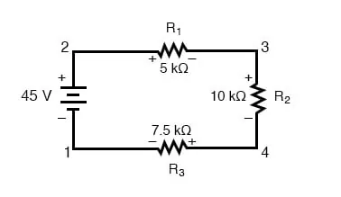
If we were to connect a voltmeter between points 2 and 1, red test lead to point 2 and the black test lead to point 1, the meter would register +45 volts. Typically the “+” sign is not shown but rather implied, for positive readings in digital meter displays. However, for this lesson, the polarity of the voltage reading is very important and so I will show positive numbers explicitly:
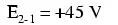
When a voltage is specified with a double subscript (the characters “2-1” in the notation “E2-1”), it means the voltage at the first point (2) as measured in reference to the second point (1). A voltage specified as “Ecd” would mean the voltage as indicated by a digital meter with the red test lead on point “c” and the black test lead on point “d”: the voltage at “c” in reference to “d”.
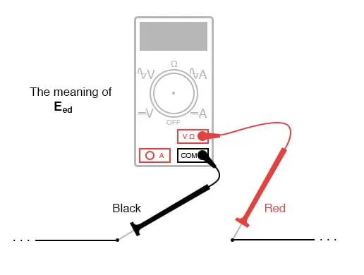
If we were to take that same voltmeter and measure the voltage drop across each resistor, stepping around the circuit in a clockwise direction with the red test lead of our meter on the point ahead and the black test lead on the point behind, we would obtain the following readings:
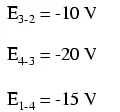
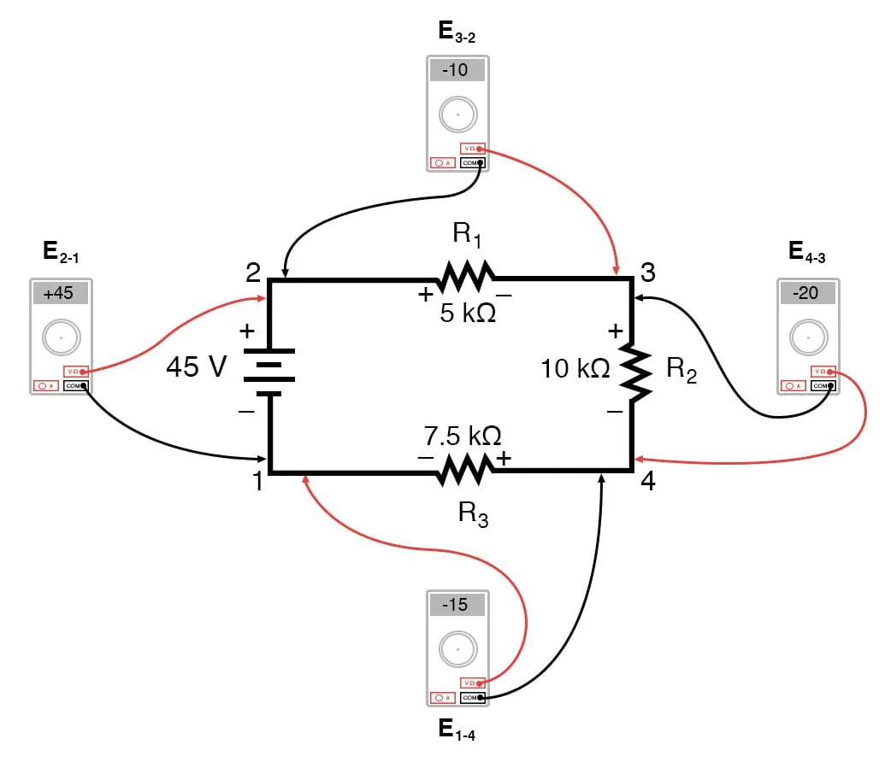
We should already be familiar with the general principle for series circuits stating that individual voltage drops add up to the total applied voltage, but measuring voltage drops in this manner and paying attention to the polarity (mathematical sign) of the readings reveals another facet of this principle: that the voltages measured as such all add up to zero:
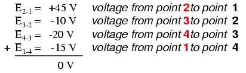
In the above example, the loop was formed by the following points in this order: 1-2-3-4-1. It doesn’t matter which point we start at or which direction we proceed in tracing the loop; the voltage sum will still equal zero. To demonstrate, we can tally up the voltages in loop 3-2-1-4-3 of the same circuit:
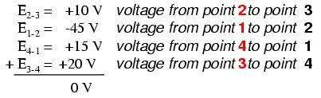
This may make more sense if we re-draw our example series circuit so that all components are represented in a straight line:
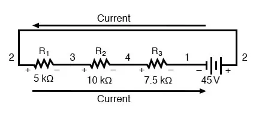
It’s still the same series circuit, just with the components arranged in a different form. Notice the polarities of the resistor voltage drops with respect to the battery: the battery’s voltage is negative on the left and positive on the right, whereas all the resistor voltage drops are oriented the other way: positive on the left and negative on the right. This is because the resistors are resisting the flow of electric charge being pushed by the battery. In other words, the “push” exerted by the resistors against the flow of electric charge must be in a direction opposite the source of electromotive force.
Here we see what a digital voltmeter would indicate across each component in this circuit, black lead on the left and red lead on the right, as laid out in horizontal fashion:
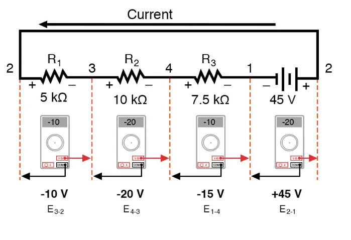
If we were to take that same voltmeter and read voltage across combinations of components, starting with the only R1 on the left and progressing across the whole string of components, we will see how the voltages add algebraically (to zero):
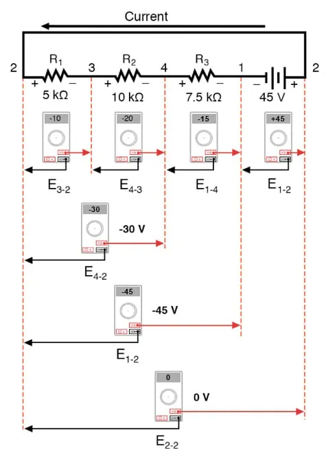
The fact that series voltages add up should be no mystery, but we notice that the polarity of these voltages makes a lot of difference in how the figures add. While reading voltage across R1—R2, and R1—R2—R3(I’m using a “double-dash” symbol “—” to represent the series connection between resistors R1, R2, and R3), we see how the voltages measure successively larger (albeit negative) magnitudes, because the polarities of the individual voltage drops are in the same orientation (positive left, negative right).
The sum of the voltage drops across R1, R2, and R3 equals 45 volts, which is the same as the battery’s output, except that the battery’s polarity is opposite that of the resistor voltage drops (negative left, positive right), so we end up with 0 volts measured across the whole string of components.
That we should end up with exactly 0 volts across the whole string should be no mystery, either. Looking at the circuit, we can see that the far left of the string (left side of R1: point number 2) is directly connected to the far right of the string (right side of battery: point number 2), as necessary to complete the circuit.
Since these two points are directly connected, they are electrically common to each other. And, as such, the voltage between those two electrically common points must be zero.
Kirchhoff’s Voltage Law (sometimes denoted as KVL for short) will work for any circuit configuration at all, not just simple series. Note how it works for this parallel circuit:
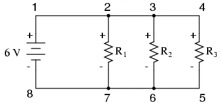
Being a parallel circuit, the voltage across every resistor is the same as the supply voltage: 6 volts. Tallying up voltages around loop 2-3-4-5-6-7-2, we get:
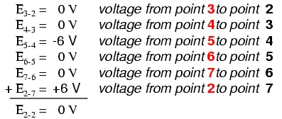
Note how I label the final (sum) voltage as E2-2. Since we began our loop-stepping sequence at point 2 and ended at point 2, the algebraic sum of those voltages will be the same as the voltage measured between the same point (E2-2), which of course must be zero.
The fact that this circuit is parallel instead of series has nothing to do with the validity of Kirchhoff’s Voltage Law. For that matter, the circuit could be a “black box”—its component configuration completely hidden from our view, with only a set of exposed terminals for us to measure the voltage between—and KVL would still hold true:
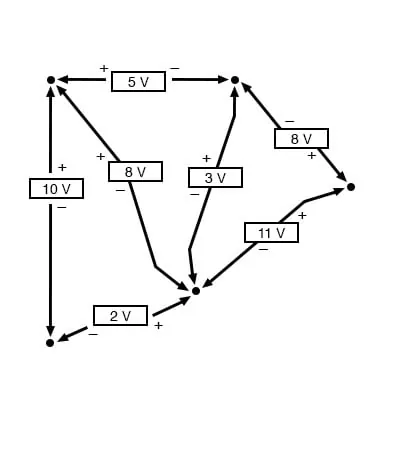
Try any order of steps from any terminal in the above diagram, stepping around back to the original terminal, and you’ll find that the algebraic sum of the voltages always equals zero.
Furthermore, the “loop” we trace for KVL doesn’t even have to be a real current path in the closed-circuit sense of the word. All we have to do to comply with KVL is to begin and end at the same point in the circuit, tallying voltage drops and polarities as we go between the next and the last point. Consider this absurd example, tracing “loop” 2-3-6-3-2 in the same parallel resistor circuit:
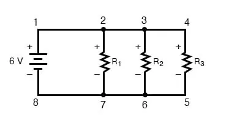
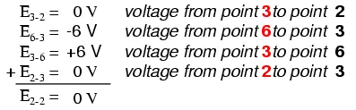
KVL can be used to determine an unknown voltage in a complex circuit, where all other voltages around a particular “loop” are known. Take the following complex circuit (actually two series circuits joined by a single wire at the bottom) as an example:
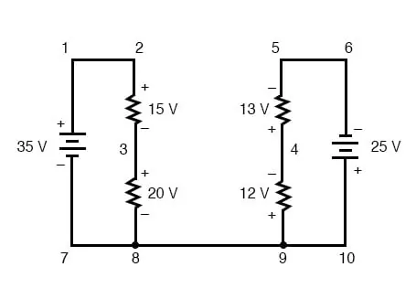
To make the problem simpler, I’ve omitted resistance values and simply given voltage drops across each resistor. The two series circuits share a common wire between them (wire 7-8-9-10), making voltage measurements between the two circuits possible. If we wanted to determine the voltage between points 4 and 3, we could set up a KVL equation with the voltage between those points as the unknown:
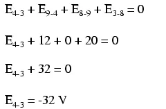
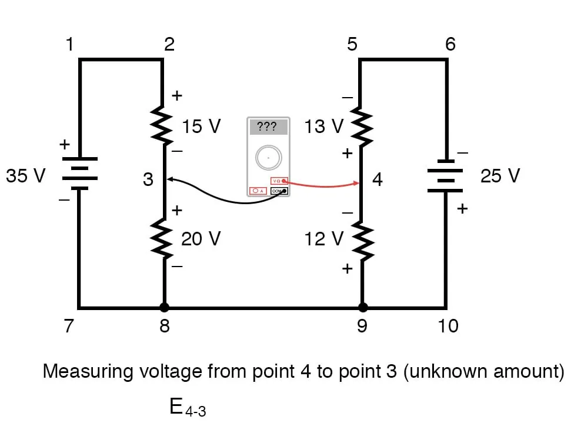
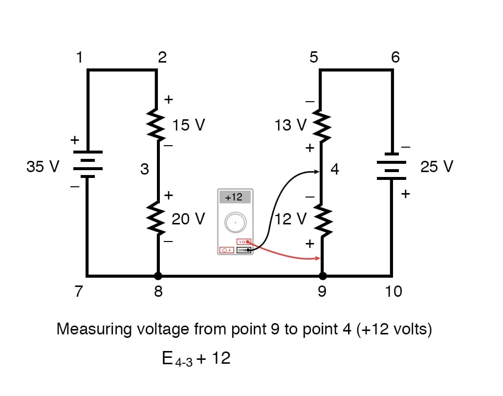
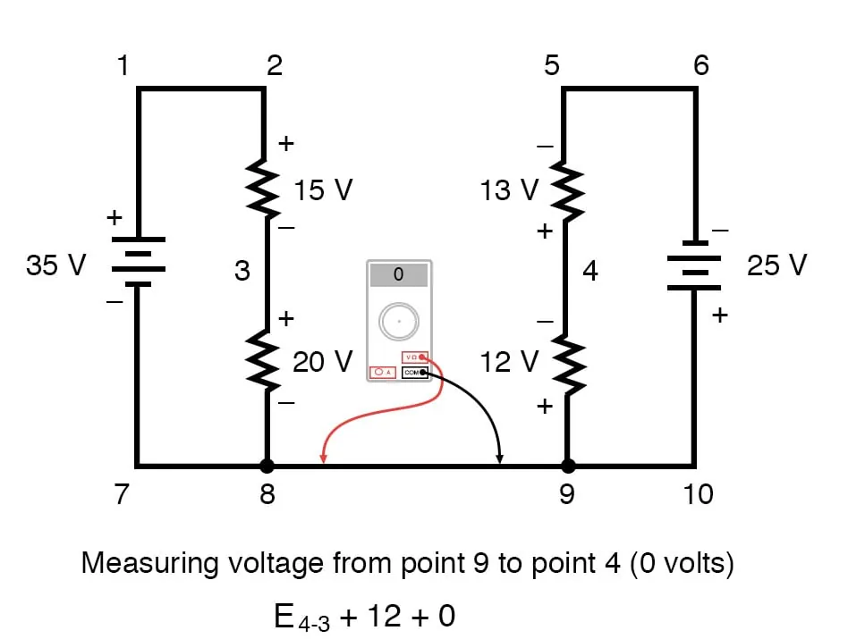
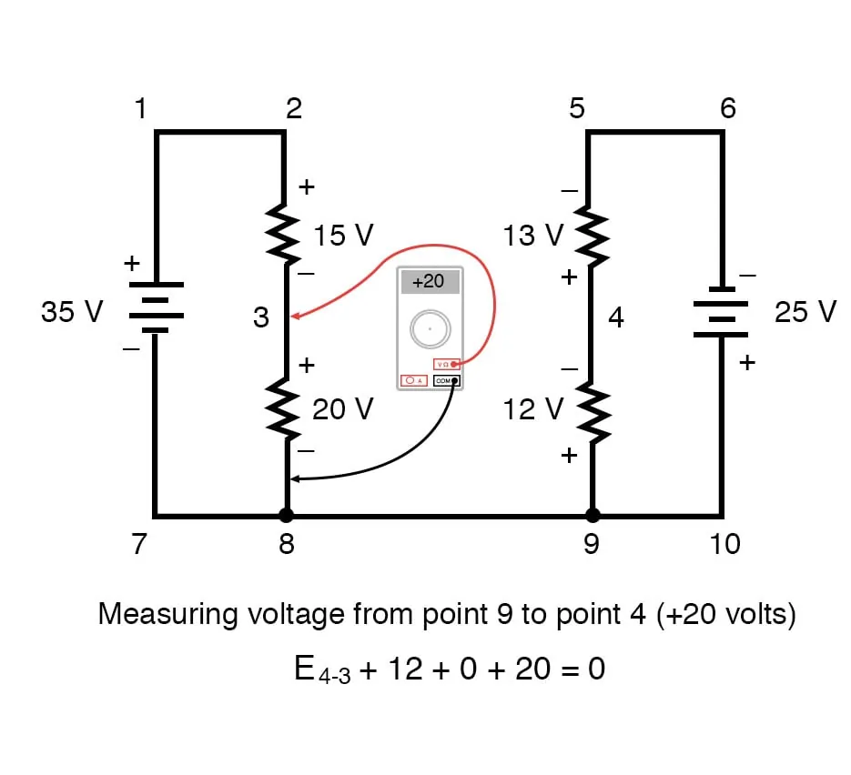
Stepping around the loop 3-4-9-8-3, we write the voltage drop figures as a digital voltmeter would register them, measuring with the red test lead on the point ahead and black test lead on the point behind as we progress around the loop. Therefore, the voltage from point 9 to point 4 is a positive (+) 12 volts because the “red lead” is on point 9 and the “black lead” is on point 4.
The voltage from point 3 to point 8 is a positive (+) 20 volts because the “red lead” is on point 3 and the “black lead” is on point 8. The voltage from point 8 to point 9 is zero, of course, because those two points are electrically common.
Our final answer for the voltage from point 4 to point 3 is a negative (-) 32 volts, telling us that point 3 is actually positive with respect to point 4, precisely what a digital voltmeter would indicate with the red lead on point 4 and the black lead on point 3:
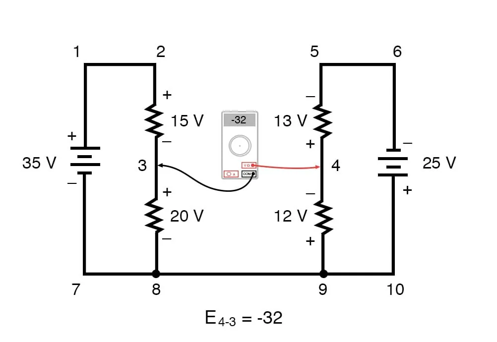
In other words, the initial placement of our “meter leads” in this KVL problem was “backward.” Had we generated our KVL equation starting with E3-4 instead of E4-3, stepping around the same loop with the opposite meter lead orientation, the final answer would have been E3-4 = +32 volts:
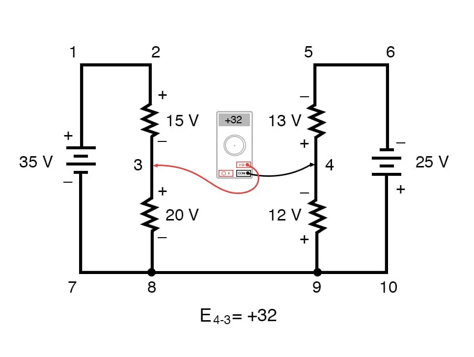
It is important to realize that neither approach is “wrong.” In both cases, we arrive at the correct assessment of voltage between the two points, 3 and 4: point 3 is positive with respect to point 4, and the voltage between them is 32 volts.
REVIEW: